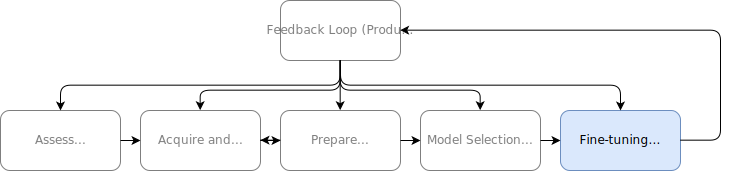
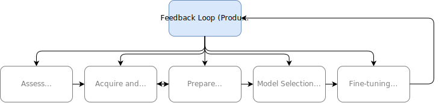

Design Process and Computational Environment
Machine Learning for Biomedical Data
Scott Doyle / scottdoy@buffalo.edu
Building a Machine Learning Solution
How do we begin a machine learning project?
- What are the concerns with biomedical data in particular?
- What kinds of questions will help save time, effort, and money?
- How should we interface with collaborators?
Design Process
A Brief Overview
Overall Process
Assess the Problem
Problem Statement
What is the problem statement, in one sentence?
NOT the machine learning task, just the gap that needs to be addressed.
Problem Statement: Fine Needle Aspirates

Pathologists must review cytology slides to identify malignant versus benign tumors.
Current Solutions
What is the current solution?
How is the problem currently addressed, if at all?
What data is currently routinely collected?
Current Solutions
Based on cytology images, we can determine by eye whether a sample is benign or malignant.
Domain Expertise
Listen to your potential users – they are the experts!Domain knowledge identifies useful features.
Pathologists already distinguish benign from malignant tumors.
Our job is to convert qualitative features to quantitative ones.
Building Informative Features
The pathologist lists cell nuclei features of importance:
- Radius
- Texture
- Perimeter
- Area
- Smoothness
- Compactness
- Concavity
- Concave Points
- Symmetry
- Fractal Dimension
Data Understanding
Look at the data that is currently collected for your problem!
Even if the features have been extracted, you should view the data that generated them.
Fine Needle Aspirates
Performance Targets
What is the goal of your system?
How will the success of the system be assessed?
This determines your overall performance measure.
Questions to Ask
- How much data do we have?
- Does the data have labels associated with it? (Supervised vs. Unsupervised)
- How expensive is it to acquire more data (time, effort, cost)?
- What type of ML are you performing?
- Assuming you succeed, what is the benefit?
Assessing the Problem
At this point…
STOP!
Is machine learning the right tool for the job?
Machine Learning Flowchart

Assessing Machine Learning
Machine learning is NOT always the right choice.
The sooner you identify whether ML will help, the better!
Identify the ML Task
Having decided on an ML approach, state the ML task to be completed.
Similar to a problem statement, but a proposed solution to the problem.
Also similar to the hypothesis statement for a scientific proposal.
Stated ML Task
Given a digital FNA image, we can use image features to predict whether a patient’s tumor is benign or malignant.
Acquire and Explore the Data
Getting the Raw Data
How you acquire the dataset is project-specific.
However, do NOT put this off!
Sensitive data (government, military, healthcare) may be difficult to obtain, be embargoed, or censored.
Dataset Characteristics
Questions about the dataset:
- What type of data is it?
- What is the volume of data (in disk size)?
- What metadata is associated with the dataset?
- Where will it be stored and accessed?
- How will it be labeled and documented?
Quickly Look at the Data Structure
Ensure that the downloaded data contains what you expect.
For images, look at them!
import matplotlib.pyplot as plt
plt.imshow(data_sample)
plt.show()For spreadsheets, print their contents!
import pandas as pd
dataset = pd.load_csv(path_to_csv_file)
dataset.head()
dataset.info()Training and Testing Set
At this point you should split the data into a “training” and “testing” set.
This protects against data snooping bias!
Model design should be completely blind to testing data, to prevent potential overfitting.
If you can hold off on retrieving testing data in the first place, even better!
Training and Testing Split
How much data should go into training and testing?
Around 70-30 or 80-20 splits of training / testing are acceptable.
Generally you want more data in training than testing.
How should you split your training and testing?
Random versus Stratified splitting?
Random vs. Stratified Sampling
Random Sampling- Randomly assign samples to training and testing
-
Use a unique
idfor each sample to ensure reproducibility - Useful in unlabeled datasets
- May lead to class balance problems
Random Sampling Example
# Import functions to calculate a hash for the dataset
from zlib import crc32
def test_set_check(identifier, test_ratio):
'''Return a boolean that states whether the current sample should be included in the testing set.
Calculates a hash value from an identifier, and returns True if the value is in the bottom
(test_ratio)-percent of the maximum possible hash value.
'''
return crc32(np.int64(identifier)) & 0xffffffff < test_ratio * 2**32
def split_train_test_by_id(data, test_ratio, id_column):
'''Return training and testing dataframes given a test ratio and column to use for computing sample hash.
Uses test_set_check to actually compute hash and put the data into training or testing.
'''
ids = data[id_column]
in_test_set = ids.apply(lambda id_: test_set_check(id_, test_ratio))
return data.loc[~in_test_set], data.loc[in_test_set]
# Apply the above functions to the dataset
train_set, test_set = split_train_test_by_id(df, 0.3, "id")Random Sampling Class Imbalance
================
Random Sampling
================
Overall class balance:
B 0.63
M 0.37
Name: diagnosis, dtype: float64
Train set class ratio:
B 0.61
M 0.39
Name: diagnosis, dtype: float64
Test set class ratio:
B 0.67
M 0.33
Name: diagnosis, dtype: float64Random vs. Stratified Sampling
Stratified Sampling- Maintain class ratio in the training and testing cases
- Ensures that train / test evaluation is on equal terms
Stratified Sampling Example
# Stratified Split
from sklearn.model_selection import StratifiedShuffleSplit
# Create the splitting object
split = StratifiedShuffleSplit(n_splits=1, test_size=0.3, random_state=42)
# Apply the split to the data frame using the "diagnosis" column as our label
for train_index, test_index in split.split(df, df["diagnosis"]):
train_set = df.loc[train_index]
test_set = df.loc[test_index]Stratified Sampling Class Balance
====================
Stratified Sampling
====================
Overall class ratio:
B 0.63
M 0.37
Name: diagnosis, dtype: float64
Train set class ratio:
B 0.63
M 0.37
Name: diagnosis, dtype: float64
Test set class ratio:
B 0.63
M 0.37
Name: diagnosis, dtype: float64Feature Visualization
Exploring the Feature Space
Visualization Drives Initial Strategy
Looking at the data can provide insights into your data.
You can evaluate natural groupings of samples and potential correlations between features.
Let’s look at nuclei texture feature as an example for our FNA dataset…
Texture of the Nuclei
Average Radius of the Nuclei
Combinations of Features
Combining features often yields greater class separation.
Multivariate Distribution
Multi-More Variate Distribution
It’s difficult to visualize more than three dimensions.
However, a pair plot can help to visualize multiple pairs of dimensions at once.
Pair Plot Code
attributes = ["radius_mean", "texture_mean", "compactness_mean", "fractal_dimension_mean"]
# We need to add the "diagnosis" label back in here, so Seaborn can plot it using the `hue` parameter
train_set_display = train_set[attributes].copy()
train_set_display['diagnosis'] = train_set['diagnosis']
g = sns.pairplot(train_set_display, hue='diagnosis', plot_kws={'alpha': 0.5, 'edgecolor': None}, height=3, aspect=1)
# Alter the plot
g.fig.suptitle('Pair Plot of '+str(len(attributes)-1)+' Features', y=1.02)
g._legend.set_title("Diagnosis")
plt.show()Pair Plot Result
Prepare Data
Data Cleaning
Most data you will receive is noisy:
- Missing or incomplete values
- Text or categorical values
- Features which are poorly scaled
Missing Data
When creating a dataset, use a unique, non-numeric value to fill in missing values.
Do not:
- Leave cells blank
- Use an “obvious” numeric value (e.g. 99 or -99)
- Use any ambiguous data that could be misinterpreted
Handling Missing Data
When pre-processing a dataset, decide what to do with missing data:
- Drop data with missing attributes
- Remove attributes that are not complete
- Set missing values to some other value
Handling Text and Categories
Text and categorical values should be converted to numeric values.
- Ordinal values can be placed in some order (“Low”, “Intermediate”, “High”)
- Non-ordinal values cannot be placed in order (blood type A or B)
Ordinal Encoding
Ordinal values can be converted directly into numbers:
- Low = 0
- Intermediate = 1
- High = 2
Ordinal Encoding
from sklearn.preprocessing import OrdinalEncoder
ordinal_encoder = OrdinalEncoder()One-Hot Encoding
Non-ordinal values can be encoded with one-hot encoding:
Replace the feature with N new features, where N is the number of categories. Each of the new features is binary, meaning it’s only 0 or 1.
One-Hot Encoding
| id | Blood Type |
|---|---|
| 001 | A |
| 002 | B |
| 003 | B |
| 004 | AB |
| 005 | O |
One-Hot Encoding
| id | Blood Type A | Blood Type B | Blood Type AB | Blood Type O |
|---|---|---|---|---|
| 001 | 1 | 0 | 0 | 0 |
| 002 | 0 | 1 | 0 | 0 |
| 003 | 0 | 1 | 0 | 0 |
| 004 | 0 | 0 | 1 | 0 |
| 005 | 0 | 0 | 0 | 1 |
One-Hot Encoding
from sklearn.preprocessing import OneHotEncoder
cat_encoder = OneHotEncoder()Label Encoding
from sklearn.preprocessing import LabelEncoder
label_encoder = LabelEncoder()
diagnosis_cat = df['diagnosis']
# Fit the encoder to the categories, and immediately
diagnosis_lab = label_encoder.fit_transform(diagnosis_cat)
# Add the diagnosis label back to the dataframe
df['diagnosis_label'] = diagnosis_labFeature Scaling
Data should always be scaled.
Scaling should be calculated only on the training set, and the proper transform applied to testing.
Feature Scaling: Min-Max Scaling
Min-Max Scaling / Normalization:
$$ x = \frac{x - \min{(x)}}{\max{(x - \min{(x)})}} $$
Bounded between 0 and 1, but if you have outliers, your data can be “squeezed” into the upper or lower portions of the range.
Feature Scaling: Standardization
Standardization:
$$ x = \frac{x - \mu}{\sigma} $$
Not bounded to any specific range, which may be a problem (e.g. for neural networks expecting a 0-1 value), but much less affected by outliers.
Code Considerations
Always write code to do your feature pre-processing.
You will be able to apply the same transforms each time, even if datasets grow.
Model Selection and Training
Overall Objective
Model selection is an art rather than a science.
Recall Occum’s Razor:
Given a set of possible solutions, the one which makes the fewest assumptions is preferable.
Overall Objective
Also often restated as:
The simplest solution is usually the best.
Simple Model: Linear Discriminant
So what does a “simple model” mean?
Start looking at linear methods, like a LinearDiscriminant:
from sklearn.lda import LDA
lin_disc = LDA()
lin_disc.fit(training_data, training_labels)Simple Model: Linear Regression
Check the performance of this system using the built-in accuracy method operating on the training data:
lin_train_acc = lin_disc.score(training_data, training_labels)
print(f"Linear Discriminant Accuracy: {lin_train_acc}")
Linear Discriminant Accuracy: 0.9271356783919598Complex Model: Support Vector Machines
We can compare this model to more complex ones, like a support vector machine:
from sklearn.svm import SVC
svm_model = SVC()
svm_model.fit(training_values_transformed, training_labels)
svm_train_acc = svm_model.score(training_values_transformed, training_labels)
print(f"Support Vector Machine Accuracy: {svm_train_acc}")
Support Vector Machine Accuracy: 0.9371859296482412Training and Evaluating on Training Set
Evaluation on subsets of training data is the best possible outcome!
Since the system has trained on this data, it is more likely to do well.
Complex models may even get “100%” performance: This is overfitting!
Revisiting Train / Test Splits
To get a real sense of the performance of your system, you should train on your training data and then evaluate on testing data:
lin_test_acc = lin_disc.score(testing_data, testing_labels)
print(f"Linear Discriminant Accuracy: {lin_test_acc}")
svm_test_acc = svm_model.score(testing_data, testing_labels)
print(f"Support Vector Machine Accuracy: {svm_test_acc}")
Linear Discriminant Accuracy: 0.9181286549707602
Support Vector Machine Accuracy: 0.9415204678362573However: What if you (randomly) get a really good or bad testing set?
Cross-Validation
What if you could create several train / test splits, with all of the benefits we discussed earlier?
This is cross-validation: Break the dataset into several (distinct) training and testing sets, and then perform training and testing on each one.
Cross-Validation
This can be easily done in scikit-learn:
from sklearn.model_selection import cross_val_score
scores = cross_val_score(svm_model, training_values_transformed, training_labels,
scoring="accuracy", cv=10)
# Display scores
def display_scores(scores):
print(f"Scores: {scores}")
print(f"Mean: {scores.mean()}")
print(f"Standard Deviation: {scores.std()}")
display_scores(scores)
Scores: [0.95 0.95 0.95 0.975 0.9 0.925
0.925 0.9 0.94871795 0.87179487]
Mean: 0.9295512820512821
Standard Deviation: 0.029683640402767546Cross-Validation Reporting
Now you have a way to robustly compare models.
After you pick a model, it’s time to make it better!
Fine-Tuning and Evaluation

Parameters and Hyperparameters
There are a lot of “knobs” you can turn to opitimize a model.
If you’ve robustly quantified model performance, now it’s okay to tweak away.
Parameter Optimization
This process is parameter optimization: trying all the parameters to see which gives you the best performance.
Side Note: Pipelines in Python
scikit-learn enables you to build pipelines to process your data.
These allow you to build a list of different values to try, plus a scoring function, and then returns the best numbers out of what it’s tried.
Grid Search: Build a Pipeline
from sklearn.pipeline import Pipeline
pipe = Pipeline(steps=[
('classification', classifier)
])Grid Search: Define the Grid of Parameters
from sklearn.model_selection import GridSearchCV
# Set the parameters by cross-validation
param_grid = {
'classification__kernel': ['rbf'],
'classification__gamma': [1e-1, 1e-2, 1e-3, 1e-4],
'classification__C': [1, 1e1, 1e2, 1e3],
}
Grid Search: Build a Model and Evaluate It
svm_model = SVC()
grid_search = GridSearchCV(svm_model, param_grid, cv=5,
scoring='neg_mean_squared_error',
return_train_score=True)
grid_search.fit(training_data, training_labels)Evaluate on Test Set
Finally, you can predict labels on your testing set:
final_model = grid_search.best_estimator_
final_predictions = final_model.predict(testing_data)
final_mse = mean_squared_error(testing_labels, final_predictions)
final_rmse = np.sqrt(final_mse)Feedback Loop (Production)

Feedback Importance
This section is very implementation dependent.
However, there are a few steps…
List of Feedback Steps
- Write tests to ingest production inputs into the system
- Write monitoring code to check live performance
- Write code for input Quality Assurance
- Periodically audit the system by re-training on new data
- Create auto backups and snapshots of long-running models
Concluding Remarks
Takeaway Thoughts
Team Science
You will often be working as part of a team.
You may only be responsible for some of the workflow steps…
… But understanding them is critical to making your project successful.